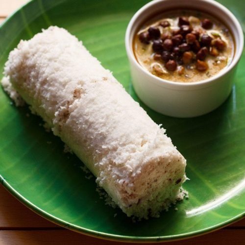

Puttu

Description
Puttu is a breakfast dish eaten in the South Indian states of Kerala,
Tamil Nadu and parts of Karnataka, as well as Sri Lanka.
Puttu means
"portioned" in Tamil and Malayalam.
It is made of steamed cylinders of
ground rice layered with coconut shavings, sometimes with a sweet or
savory filling on the inside.
Puttu is served hot with sweet side dishes
such as palm sugar or banana, or with curries including dal, chickpea,
mutton, fish, chicken, or beef curry.
Ingridients
- 2 and 1/2 cups slightly coarse organic rice flour
- 1 and 1/2 cup freshly grated coconut
- 1 and 1/2 cup hot boiled water
- Salt according to taste.
- Puttu kudam or puttu maker.
Steps
- Take the rice flour in a large bowl. Do not sift or sieve the flour as very fine rice flour will not give the right consistency of puttu.
- Boil the required amount of water and slowly pour into the bowl containing rice flour. Mix with a spoon as you pour to ensure that the rice absorbs all the water.
- Add salt according to taste.
- Add the grated coconut. Don’t add the whole of the above-mentioned quantity; keep a little aside to be added later while steaming the puttu.
- Mix well with a spoon first, then use your fingers. There should be no lumps. The mixture needs to be moist enough that if you make little balls of it, they hold their shape. However, it should also be crumbly and break into its powdery form if pressed, just as easily.
- Set water to boil in the puttu maker. The pot-like vessel at the bottom is what needs to be filled with water. If using an idli steamer or DIY steamer, fill water in vessel required for steaming.
- Assemble the cylindrical part of the puttu maker with the perforated steel disc at the very bottom.
- Sprinkle some of the leftover grated coconuts over the perforated disc. Don’t add too much. If using an idli steamer, sprinkle the coconut on the mould for the idli.
- Add puttu mixture into the cylindrical part of the vessel right up to the top. Don’t pack the mixture too tight, it’ll make the puttu very dense. Add in small batches to ensure airflow. Sprinkle some more coconut at the very top. Follow the same method if you’re using a different type of steamer, adjusted for volume of the vessel being used.
- Next, the cylinder needs to be securely fixed on top of the vessel of boiling water. Close with lid.
- If using a puttu maker, steam for 5 minutes. For other steamers, timing will have to be adjusted accordingly.
- Once cooked, the cylinder must be taken off of the vessel with water. Open the lid. Using a pick or chopstick or spoon, push the metal disc such that the cooked puttu comes out of the vessel in perfect cylindrical shape. (Measurements of ingredients in this puttu recipe are for four batches of puttu).
- Serve hot and enjoy!